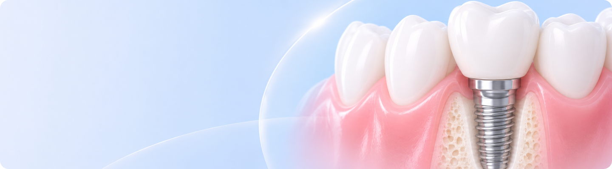

임플란트란?
임플란트는 치아가 상실된 자리에 인공치아 뿌리(기둥)를 식립하여
치아를 대체하는 치과 치료 방법입니다.

틀니나 브릿지와 달리 턱뼈에 고정되는 구조로,
자연치아와 비슷한 안정성을 기대할 수 있습니다.
임플란트 시술과정
-

- 진단 및 치료계획
- 구강 상태를 확인하고
치료 계획을 세웁니다.
-

- 임플란트 식립
- 잇몸뼈에 임플란트를
식립합니다.
-
- 회복과 결합 단계
- 임플란트가 잇몸뼈와
결합하는 기간을 거칩니다.
-
- 보철 장착 및 관리
- 보철물을 장착하고
정기적으로 관리합니다.
-
- 진단 및 치료계획
- 구강 상태를 확인하고
치료 계획을 세웁니다.
-
- 임플란트 식립
- 잇몸뼈에 임플란트를
식립합니다.
※ 치료 과정과 소요 기간은 개인의 치아 상태에 따라 달라질 수 있습니다.
임플란트 수술 전·후 주의사항
- 수술 전 주의사항
- 수술 후 주의사항
-
- 01 약물 사전 조절
- 혈전 예방약과 같은 혈액 응고를 억제해 수술 후 출혈이 지속될 수 있는 것을 피하시고,
골다공증 치료제와 같은 턱뼈 괴사의 위험이 높은 약은 피해주세요.
- 02 전신 질환 관리
- 당뇨와 고혈압은 수술 후 회복에 영향을 줄 수 있으므로,
혈당과 혈압을 안정적으로 관리하고 복용 약물을 의료진에게 알려야 합니다.
- 03 금연 · 금주
- 흡연과 음주는 혈액순환과 상처 회복을 방해할 수 있으므로,
안정적인 골유착과 빠른 회복을 위해 삼가는 것이 좋습니다.
-
- 01 금연 · 금주
- 음주와 흡연은 상처 회복을 늦추고 염증 위험을 높일 수 있으므로 수술 후에는 삼가주세요.
- 02 올바른 지혈 관리
- 수술 후 입안에 고이는 피와 침은 뱉지 말고 가볍게 삼켜주시고,
침을 세게 뱉거나 빨대를 사용하는 행동은 피해주세요.
- 03 수술 부위 청결 유지
- 수술 부위를 혀나 손가락으로 만지지 마세요.
수술 부위를 제외한 나머지 치아는 평소처럼 부드럽게 칫솔질해주세요.
- 04 과도한 신체 활동 주의
- 수술 후에는 찜질방, 사우나, 반식욕 및 격렬한 운동을 피해주세요.
과도한 활동은 출혈과 부기를 악화시킬 수 있으므로 충분히 안정을 취해주세요.